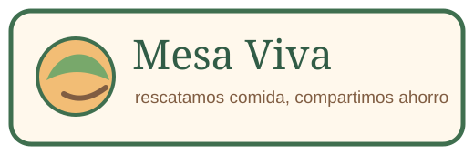
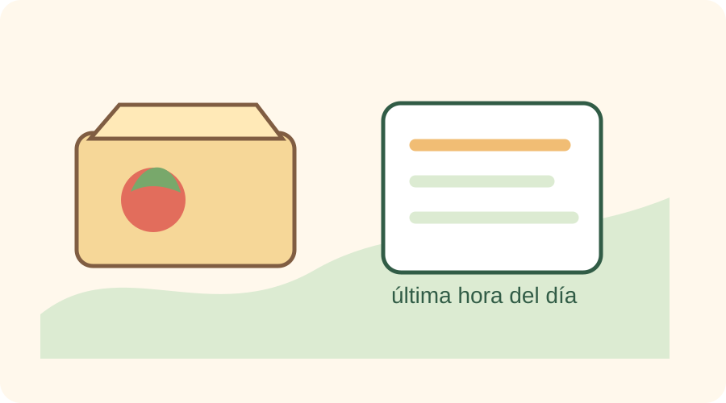

1. Negocio
Publica comida del día con descuento.

rescatamos comida, compartimos ahorro
Esta página propone rescatar comida que todavía está en buen estado, pero que los negocios necesitan vender antes del cierre del día.
La idea no es mostrar una tienda perfecta, sino un prototipo entendible: el cliente revisa el menú, identifica ofertas con urgencia y puede simular un pedido. Así se une el ahorro con una acción responsable contra el desperdicio de alimentos.

Organicé el sitio como si fuera una app pequeña de barrio: simple, con colores cálidos y con avisos visibles para que el usuario entienda rápido qué producto conviene rescatar.
Publica comida del día con descuento.
Elige una opción económica y cercana.
Se reduce el descarte innecesario.